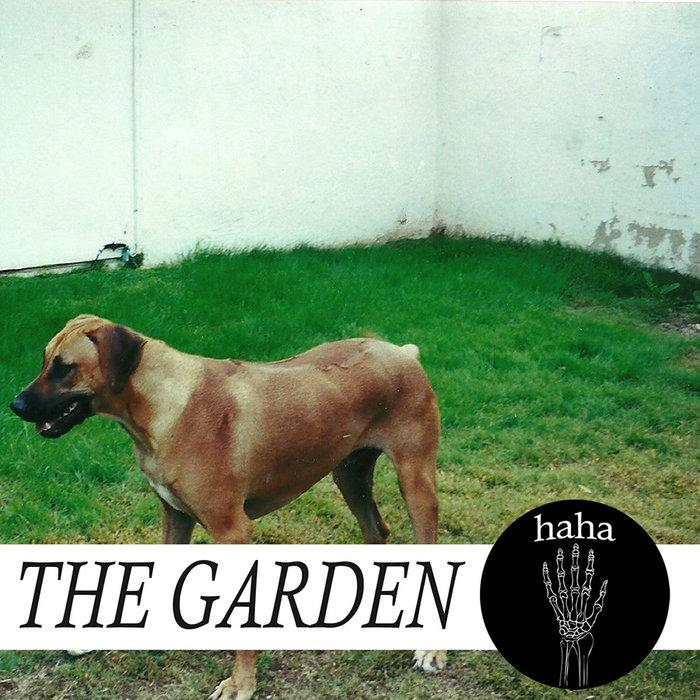

The Garden · Album
Haha
THE GARDEN — Wyatt and Fletcher Shears
Haha is a release by The Garden, known for blending punk energy with electronic production and experimental songwriting.
Tracklist
- 01All Access
- 02Egg
- 03Vexation
- 04I'm a Woman
- 05Stylish Spit
- 06Good News
- 07Gift
- 08Red Green Yellow
- 09Have a Good Day Sir
- 10Call This # Now
- 11Haha